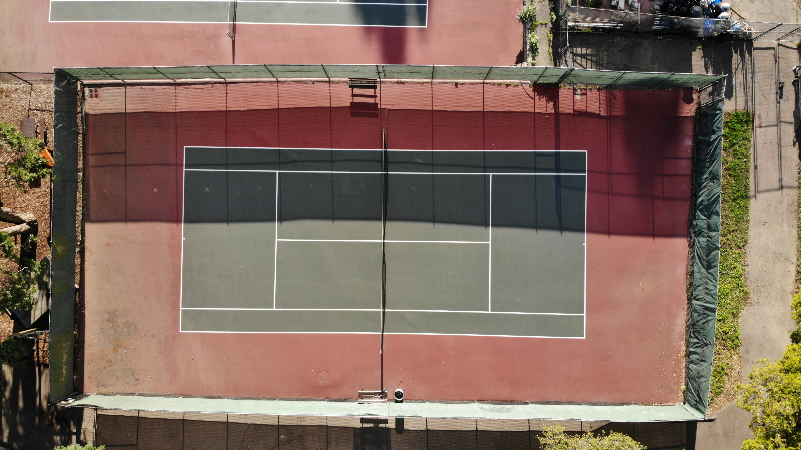
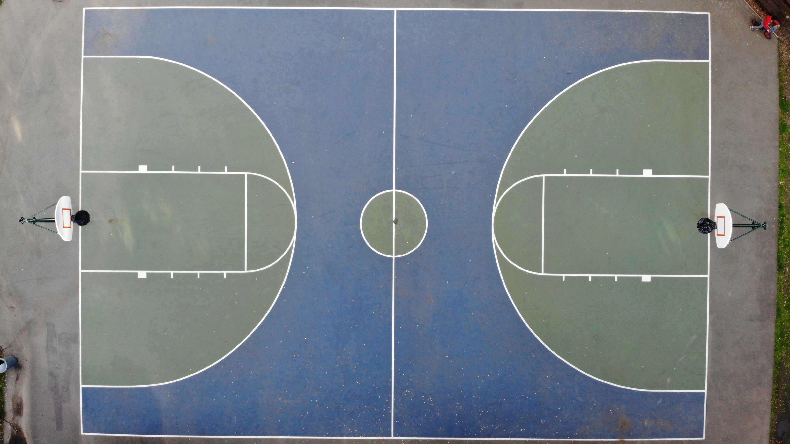
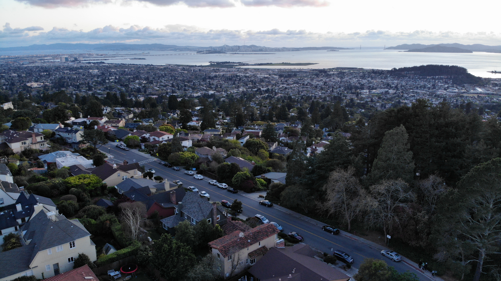

I have often played on this nearby tennis court. However, for most of the
past few weeks, it has sat empty, acculumating dust and leaves.
Intro
During this time, there has been a constant flood of news, statistics, and dreary predictions for the future. However, what always catches my eye are the photos of once busy places that are now suddenly empty:
For example, The Great Mosque of Mecca, Saudi Arabia:
 Or New York Street, New York:
Or New York Street, New York:
 Although it may look scary to some, I think it is nice that the earth is getting a break from the constant noise and smog that some of these places produce. For this project, I set out to take similar photos of my neighborhood. I was especially looking for busy places like tennis courts, playgrounds, and street intersections. I took all the pictures with my drone to capture the same aerial perspective as the above photos. For each photo, I have marked the image's location on a map so that you know exactly where the photo was taken. Hopefully, they will help bring the outside world to those who are feeling cooped up indoors. Take a look:
Although it may look scary to some, I think it is nice that the earth is getting a break from the constant noise and smog that some of these places produce. For this project, I set out to take similar photos of my neighborhood. I was especially looking for busy places like tennis courts, playgrounds, and street intersections. I took all the pictures with my drone to capture the same aerial perspective as the above photos. For each photo, I have marked the image's location on a map so that you know exactly where the photo was taken. Hopefully, they will help bring the outside world to those who are feeling cooped up indoors. Take a look:
1 / 8

2/ 8

This gas station is on the busiest street near my house, but with no one needing gas, the area now has an apocalyptic feel. The only people in this photo are me, my mom, and a jogger, all by the bus stop.
3/ 8

Close to the tennis courts, this basketball court is also empty, with most people prefering to jog instead of play sports.
4 / 8

Like many around the world, this intersection sees few cars now.
5 / 8

The setting sun hits this sad looking playground. Both the swing set and one of the platforms is wrapped in yellow caution tape.
6/ 8

Few people leave their houses, with cars remaining idle for weeks.
7/ 8

This long barren road along the reservoir reminds me of the photo of New York.
8/ 8

This photo is a view of my entire neighborhood, looking out toward San Francisco.
Show Image Location
Self Reflection
This project was a good excuse to get outside and do something I love: flying drones. When I first went outside to take photos, I went to the tennis courts and basketball courts. I was initially alarmed at how many people were outside. People were chatting with friends, playing soccer, and bringing their kids to the park. This was quite unexpected, as I thought there was only going to be a few people walking. Eventually I found places like the gas station and playground that were truly barren. I think the photos turned out just the way I had hoped: empty streets, quiet parks, and the eerie feeling that comes with abandoned places. The website itself was relaxing to make, and lets me share my photos with others easily. I challenged myself to write the code from scratch, and did not use any site building website. It ended up being more than 500 lines of code. I think this gives it an orginal look, as I designed everything, including the pop-out map, just as I wanted it. Hopefully I can continue to fly my drone and add to my collection!